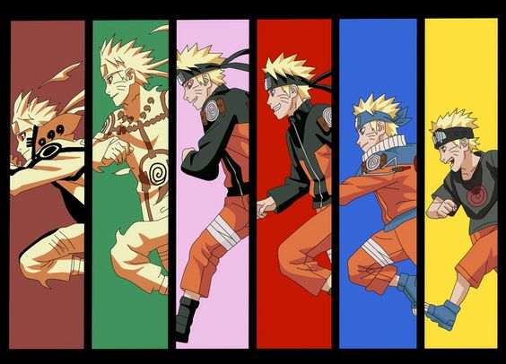
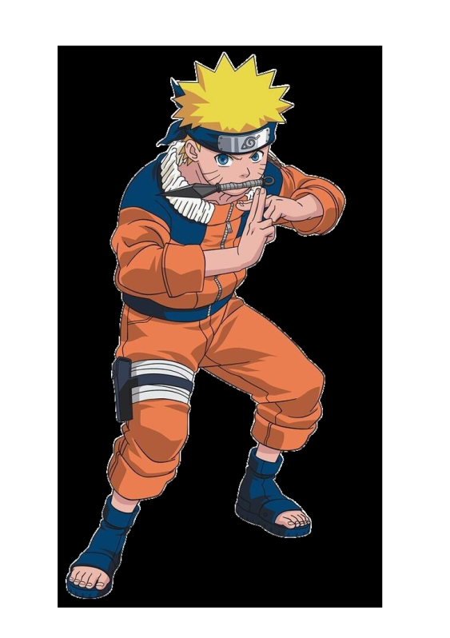
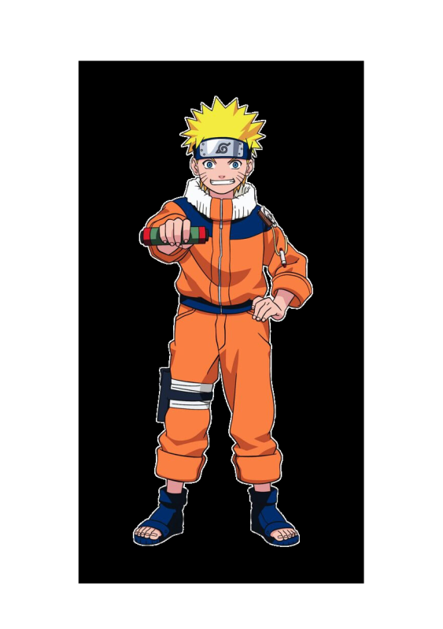
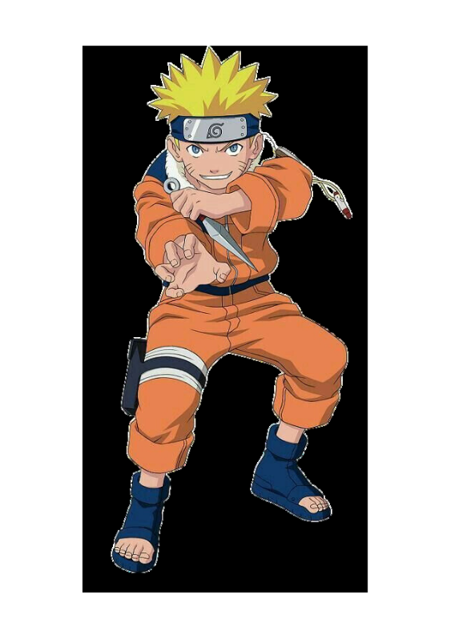
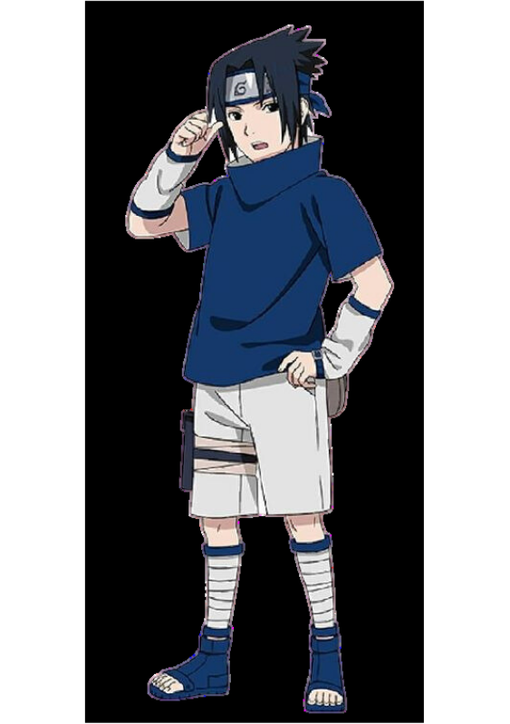
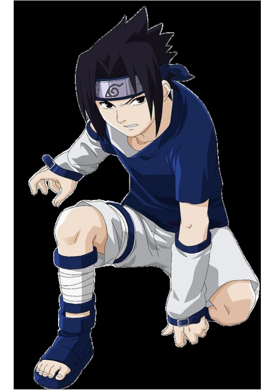
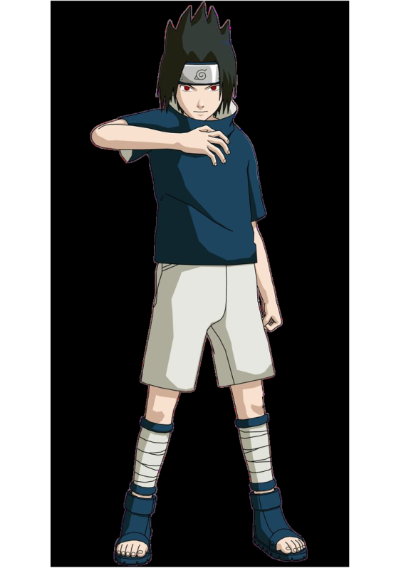
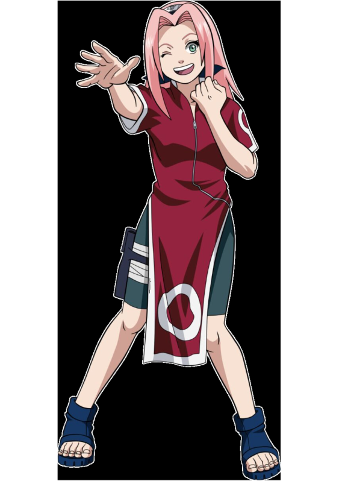
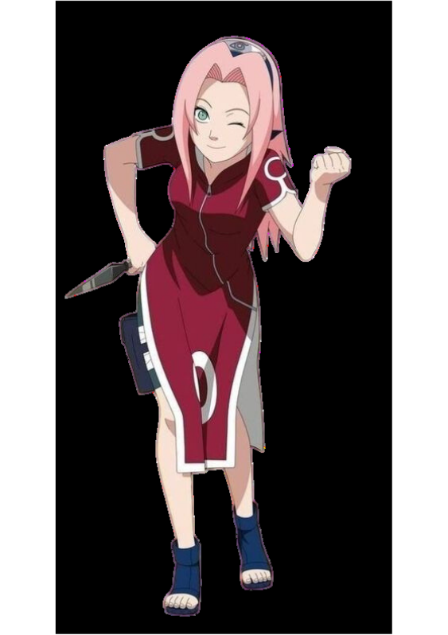
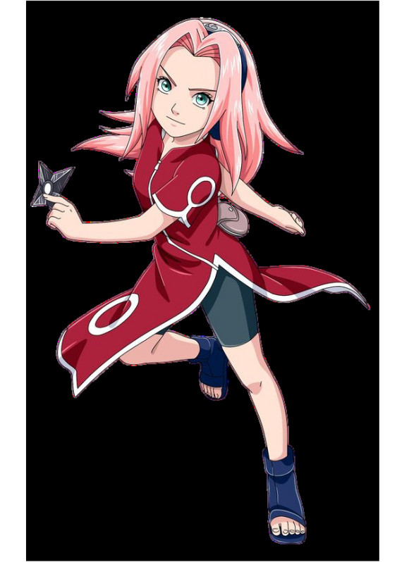

A Historia de Naruto Classico
Naruto Clássico é uma série de mangá e anime que narra as aventuras de Naruto Uzumaki,
um jovem ninja que quer se tornar o líder de sua vila.
Ele tem dentro de si a raposa de nove caudas, um demônio que atacou sua vila no passado e que lhe causa muita rejeição.
Ele forma um time com Sasuke Uchiha, seu rival e amigo, e Sakura Haruno, sua paixão platônica.
Eles são orientados pelo mestre Kakashi Hatake, um ninja habilidoso e enigmático.
Juntos, eles enfrentam vários desafios e inimigos, como o exame Chunin, a invasão da Vila da Areia,
a organização Akatsuki e a traição de Sasuke. Naruto aprende novas técnicas,
faz novos amigos e descobre mais sobre seu passado e seu destino.
Ele nunca desiste de seus sonhos e de seus ideais, nem de trazer Sasuke de volta para sua vila.

A Historia do Naruto Uzumaki
Naruto Uzumaki é o protagonista de Naruto Clássico, um anime baseado no mangá de mesmo nome criado por Masashi Kishimoto. Ele conta a história de Naruto, um jovem ninja que sonha em se tornar o Hokage, o líder máximo de sua vila, Konoha. Ele possui dentro de si a raposa de nove caudas, um poderoso demônio que foi selado em seu corpo pelo Quarto Hokage, que morreu para salvar a vila do ataque da fera. Por causa disso, Naruto sofreu muito preconceito e solidão durante sua infância, pois os moradores o viam como uma ameaça e não como um herói. Ele sempre tentou chamar a atenção das pessoas com suas travessuras e seu jeito hiperativo, mas também demonstrou uma grande determinação e um forte senso de justiça.
Naruto ingressou na Academia Ninja para aprender as artes ninjas e se tornar um shinobi. Lá, ele conheceu seus futuros companheiros de equipe: Sasuke Uchiha e Sakura Haruno. Sasuke era um gênio do clã Uchiha, que foi massacrado por seu irmão mais velho, Itachi, que se tornou um criminoso procurado. Sasuke jurou vingar sua família e matar Itachi, e por isso se dedicava ao máximo aos treinamentos. Sakura era uma garota inteligente e apaixonada por Sasuke, mas que tinha pouca confiança em si mesma e em suas habilidades. Ela desprezava Naruto por seu comportamento infantil e sua falta de talento. Os três foram designados para formar o Time 7, sob a supervisão de Kakashi Hatake, um ninja experiente e misterioso que usava um olho especial chamado Sharingan, que lhe permitia copiar as técnicas dos adversários. Kakashi era conhecido como o Ninja Copiador e era um dos ninjas mais respeitados de Konoha.
O Time 7 passou por várias missões e aventuras juntos, enfrentando diversos inimigos e desafios. Eles participaram do Exame Chunin, uma prova para se tornarem ninjas de nível médio, onde conheceram outros ninjas de outras vilas, como Rock Lee, Neji Hyuga, Gaara do Deserto e outros. Eles também enfrentaram a invasão de Konoha pela Vila Oculta da Areia e pela Vila Oculta do Som, lideradas por Orochimaru, um ex-ninja de Konoha que buscava a imortalidade e o poder absoluto. Eles ainda tiveram que lidar com a organização criminosa Akatsuki, que tinha como objetivo capturar as nove bestas com cauda, incluindo a raposa de nove caudas dentro de Naruto. Eles também presenciaram a traição de Sasuke, que abandonou Konoha para se juntar a Orochimaru, acreditando que ele poderia lhe dar mais força para matar Itachi.
Naruto aprendeu novas habilidades e técnicas ao longo de sua jornada, como o Rasengan, uma esfera giratória de energia criada pelo Quarto Hokage, o Modo Sábio, uma forma de usar a energia natural para aumentar seu poder, e o controle da raposa de nove caudas, que lhe permitiu usar parte ou toda a sua forma. Ele também fez novas amizades e aliados, como Jiraiya, um dos lendários Sannin e seu mestre, Tsunade, a Quinta Hokage e curandeira, Shikamaru Nara, um gênio preguiçoso e estrategista, Hinata Hyuga, uma garota tímida e gentil que tinha uma paixão secreta por ele, e muitos outros. Ele também descobriu mais sobre sua origem e seu destino, como o fato de ser filho do Quarto Hokage, o escolhido do Sábio dos Seis Caminhos para deter a ameaça do Dez-Caudas, e o rival de Sasuke na profecia da luta entre os descendentes do clã Uzumaki e do clã Uchiha. Ele sempre lutou para proteger sua vila e seus amigos, e para trazer Sasuke de volta ao seu lado, seguindo seu lema: “Eu nunca volto atrás na minha palavra, esse é o meu jeito ninja!”



Agora, fique com um rap, do personagem NARUTO, do rapper Player Tauz
A Historia do Sasuke Uchiha
Sasuke Uchiha é um dos personagens principais do anime Naruto Clássico. Ele é um ninja do clã Uchiha, que foi massacrado por seu irmão mais velho, Itachi, quando ele era criança. Sasuke jurou vingança contra Itachi e dedicou sua vida a se tornar mais forte.
Sasuke se tornou um dos alunos do time 7, liderado por Kakashi Hatake, junto com Naruto Uzumaki e Sakura Haruno. Ele desenvolveu uma rivalidade com Naruto, que também almejava se tornar um ninja poderoso. Sasuke também despertou o Sharingan, um poder ocular que lhe dava vantagens em combate.
Sasuke participou de várias missões com o time 7, enfrentando inimigos como Zabuza Momochi, Orochimaru e Gaara. Ele também participou do exame chunin, onde avançou até a fase final e lutou contra Naruto. Sasuke demonstrou um grande domínio de técnicas de fogo e relâmpago, além de uma inteligência e frieza impressionantes.
No entanto, Sasuke também se sentia inferior a Naruto, que progredia rapidamente e superava seus limites. Sasuke foi tentado por Orochimaru, um dos criminosos mais procurados do mundo ninja, que lhe ofereceu mais poder em troca de sua lealdade. Sasuke acabou aceitando a proposta de Orochimaru e abandonou a vila de Konoha, traindo seus amigos e companheiros.
Sasuke seguiu para o esconderijo de Orochimaru, onde passou por um intenso treinamento e recebeu uma marca amaldiçoada que aumentava sua força. Ele também formou uma nova equipe com Suigetsu, Karin e Jugo, chamada de Hebi. Seu objetivo era encontrar e matar Itachi, que também era alvo da Akatsuki, uma organização de ninjas renegados.



Agora, fique com um rap, do personagem SASUKE, do rapper Player Tauz
A Historia de Sakura Haruno
Sakura Haruno é uma das personagens principais do anime Naruto Clássico, que conta a história de um jovem ninja que sonha em se tornar o líder de sua vila. Sakura é uma kunoichi (ninja feminina) da equipe 7, formada por Naruto Uzumaki, Sasuke Uchiha e Kakashi Hatake. Ela é apaixonada por Sasuke e rivaliza com Naruto, mas ao longo da série ela desenvolve uma forte amizade e lealdade por eles.
Sakura tem cabelos rosas e olhos verdes, e usa um vestido vermelho com um símbolo de sua vila na frente. Ela é inteligente, determinada e corajosa, mas também tem um temperamento explosivo e uma personalidade sarcástica. Ela é especialista em técnicas médicas e de controle de chakra, e usa sua força sobre-humana para lutar contra seus inimigos. Ela também é capaz de invocar uma lesma gigante chamada Katsuyu, que pode curar seus aliados.
Sakura é uma personagem muito popular entre os fãs de anime, pois representa uma mulher forte, independente e que não desiste de seus objetivos. Ela enfrenta diversos desafios e perigos ao lado de seus companheiros, e demonstra um grande crescimento e evolução ao longo da história. Ela é uma das heroínas mais admiradas do mundo dos animes.



Agora, fique com um rap, da personagem SAKURA, da rapper Felicia Rock